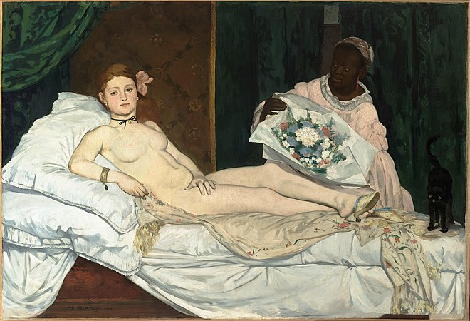

A French modernist painter. He was one of the first 19th-century artists to paint modern life, and a pivotal figure in the transition from Realism to Impressionism.
Born into an upper-class household with strong political connections, Manet rejected the future originally envisioned for him, and became engrossed in the world of painting. His early masterworks, The Luncheon on the Grass and Olympia, both 1863, caused great controversy and served as rallying points for the young painters who would create Impressionism. Today, these are considered watershed paintings that mark the start of modern art.